| 类型 | 规律 |
|---|---|
| 碱性（水溶液，考试默认） | 2° > 1° ≈ 3° > NH₃ > 芳胺 > 酰胺（脂肪胺>氨>芳胺） |
| 芳胺为啥弱碱 | N 孤对进苯环共轭离域，不愿给质子；环上 –NO₂ 更弱、–CH₃/–OCH₃ 更强 |
| 重氮化条件 | ArNH₂ + NaNO₂/HCl，必须 0–5℃（高于则分解成酚） |
| 重氮盐放氮（换基） | CuCl/CuBr/CuCN（Sandmeyer→Cl/Br/CN）、KI→I、H₃PO₂→H（脱氨）、H₂O/Δ→OH |
| 重氮盐留氮（偶联） | + 酚（弱碱）/ 芳胺（弱酸）→ 偶氮染料 Ar–N=N–Ar′（进攻对位） |
| Hofmann 消除取向 | 少取代烯（Hofmann，反 Saytzeff）——离去基 –NR₃⁺ 又大又带正电 |
| Hinsberg 鉴别（苯磺酰氯） | 1° → 溶 NaOH；2° → 不溶 NaOH（沉淀）；3° → 不反应 |
| HNO₂ 鉴别 | 脂 1° 放 N₂↑；芳 1° 成稳定重氮盐；2° 黄色亚硝胺；3° 无（芳 3° 对位 C-亚硝化绿） |
| 制备增不增碳 | 腈 R–CN 还原 +1 碳；酰胺 / 硝基 / 还原胺化 不增碳 |
| 纯 1° 胺怎么造 | Gabriel（酰亚胺只接一个 R）/ 还原胺化（控级数）——别用 RX+NH₃（多烷基化） |
| 考点 | 题型 | 跳转 |
|---|---|---|
| 胺的分类与命名 | 命名 / 选择 | 14.1 命名 |
| 碱性强弱排序 | 选择 / 排序 | 14.2 碱性 |
| 制备（还原硝基/腈/酰胺、还原胺化、Gabriel） | 合成 | 14.3 制备 |
| 酰化 / 磺酰化（Hinsberg） | 鉴别 / 完成 | 14.4 反应 |
| 与 HNO₂ 反应（1°/2°/3°，脂/芳） | 鉴别 / 完成 | 14.4③ |
| 季铵盐 / Hofmann 消除（择多反 Saytzeff） | 机理 / 完成 | 14.5 季铵盐 |
| 重氮化机理 | 机理 | 14.6① |
| Sandmeyer + 放氮各产物 | 完成 / 合成 | 14.6② |
| 偶联（偶氮染料） | 完成 / 合成 | 14.6③ |
| 重氮盐综合合成（中转站思路） | 合成 | 14.7 合成应用 |
| 化学鉴别 | 鉴别 | 14.8 鉴别 |
| 易错清单 | — | 考前提醒 |
| 级数 | 结构 | 例 |
|---|---|---|
| 伯胺 (1°) | R–NH₂（N 上 1 个烃基） | CH₃CH₂NH₂ 乙胺、C₆H₅NH₂ 苯胺 |
| 仲胺 (2°) | R₂NH（N 上 2 个烃基） | (CH₃)₂NH 二甲胺 |
| 叔胺 (3°) | R₃N（N 上 3 个烃基） | (CH₃)₃N 三甲胺 |
| 季铵盐/碱 | R₄N⁺X⁻ / R₄N⁺OH⁻ | (CH₃)₄N⁺OH⁻ 氢氧化四甲铵 |
常见芳胺俗名：苯胺 (aniline)、对甲苯胺 (p-toluidine)、二苯胺、α/β-萘胺。
胺的碱性 = N 上孤对给质子（结合 H⁺）的能力。两个相互拉扯的因素决定排序：① 烷基 +I 给电子使孤对更富电子（增碱）；② 形成铵正离子后，N–H 越多、水的氢键溶剂化越好，正离子越稳（增碱）。
2° 胺 > 1° 胺 ≈ 3° 胺 > NH₃ > 芳胺（苯胺）> 酰胺
一句话：脂肪胺 > 氨 > 芳胺。
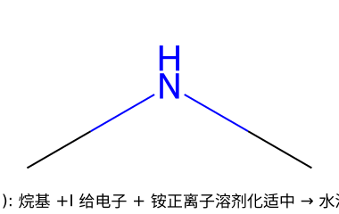
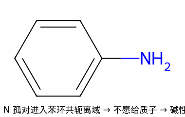
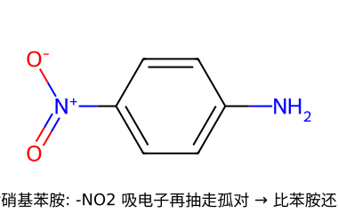
苯胺孤对进苯环已经弱；对位再挂 –NO₂（强吸电子）把孤对进一步抽走 → 对硝基苯胺比苯胺还弱。反之挂给电子基（–CH₃、–OCH₃、–NH₂）则比苯胺强。
二甲胺（2° 脂肪胺）> 氨 > 苯胺 > 对硝基苯胺
造胺的核心矛盾：直接用 RX + NH₃ 会"过度烷基化"（生成的 1° 胺比氨更亲核，继续被烷基化成 2°、3°、季铵的混合物，没法停）。所以制单一级数的胺要走"绕开"路线。
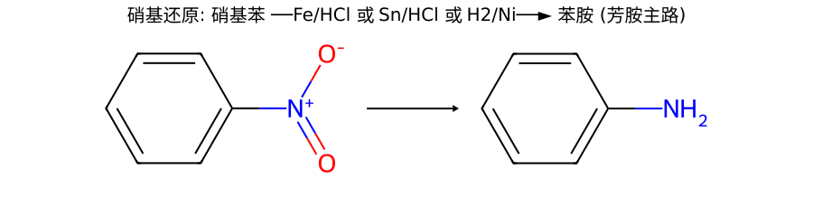
工业/实验室造芳胺的标准路：苯先硝化得硝基苯，再还原得苯胺。还原剂常用 Fe/HCl、Sn/HCl 或催化氢化 (H₂/Ni)。
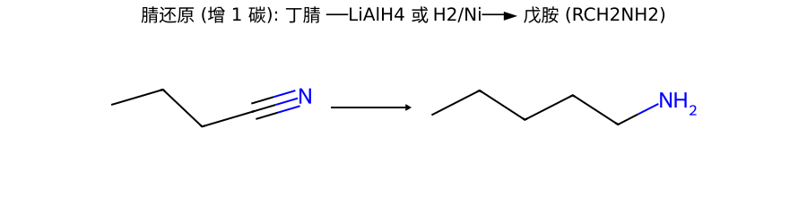
腈那个 C 进了 –CH₂NH₂，所以产物比原料多一个碳。常配合"卤代烃 + NaCN 先增碳"使用（见 14.7 合成）。
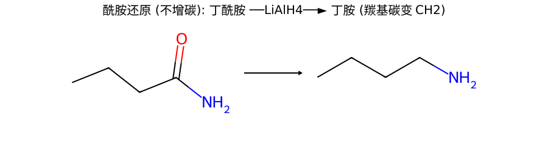
酰胺的羰基碳被还原成 CH₂，碳数不变。
$$\text{R}_2\text{C=O} + \text{R'NH}_2 \xrightarrow{-\text{H}_2\text{O}} \text{R}_2\text{C=NR'} \xrightarrow{\text{NaBH}_3\text{CN 或 H}_2/\text{Ni}} \text{R}_2\text{CH-NHR'}$$
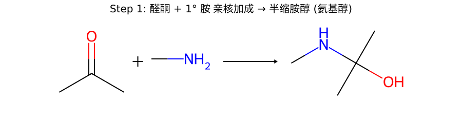
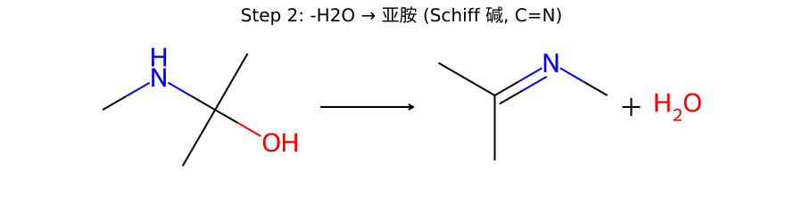
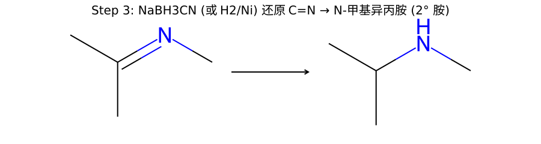
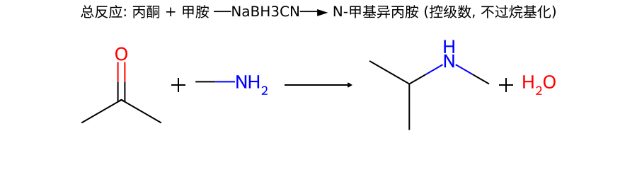
三步推电子：① 胺 N 孤对进攻羰基 C → 半缩胺醇（氨基醇）；② 失水形成 C=N 亚胺（Schiff 碱）；③ NaBH₃CN（氰基硼氢化钠，弱酸下选择性还原 C=N 而不大动 C=O）送 H⁻ 把 C=N 还原成 C–N。
用氨得 1° 胺、用 1° 胺得 2° 胺、用 2° 胺得 3° 胺——级数可控，这是它优于 RX+NH₃ 的地方。
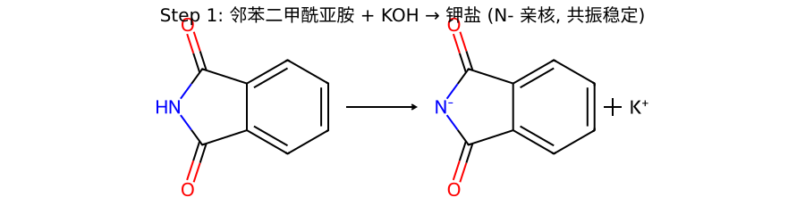
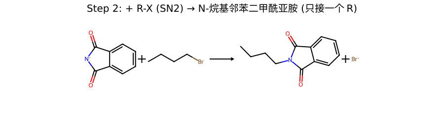
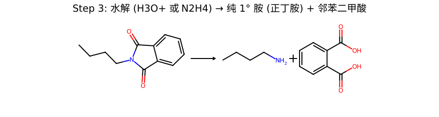
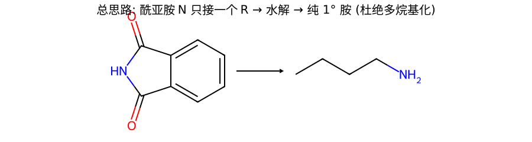
为啥能得"纯" 1° 胺：酰亚胺氮"一次性只接一个 R"，从根上杜绝了多烷基化。
除了碱性（成盐），胺的化学反应都是 N 孤对去进攻亲电体：进攻酰基 → 酰化；进攻磺酰基 → 磺酰化（Hinsberg）；进攻 NO⁺ → 与亚硝酸反应。
胺 + R–X（SN2）→ 高一级的胺。但如 14.3 所说，停不住，会一路烷基化到季铵盐。所以烷基化不是好的"制单一胺"方法（要造胺用还原胺化/Gabriel），但它是穷尽甲基化（Hofmann）的第一步（见 14.5）。
1° 胺 + (CH₃CO)₂O → N-取代乙酰胺（R–NHCOCH₃）。苯胺乙酰化常用于"先保护 –NH₂ 降低活性、做完亲电取代再水解还原"（防止苯胺被氧化或过度取代）。
| 胺 | 与 PhSO₂Cl 反应 | 加 NaOH 后现象 |
|---|---|---|
| 1° 胺 | 生成 N-单取代磺酰胺 R–NH–SO₂Ph（还剩 1 个 N–H） | N–H 被两个吸电子基拉得很酸 → 溶于 NaOH 成清亮溶液 |
| 2° 胺 | 生成 N,N-二取代磺酰胺 R₂N–SO₂Ph（无 N–H） | 无酸性 N–H → 不溶 NaOH，呈沉淀/油状 |
| 3° 胺 | N 无 H，不生成磺酰胺 | 不反应（静置可回收原胺） |
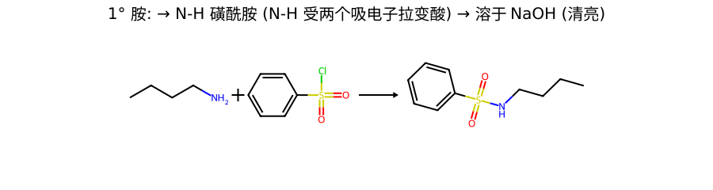
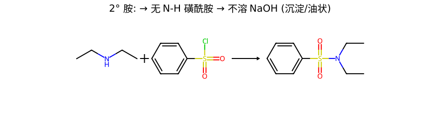
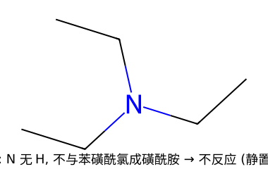
记法：1° → 溶（剩的 N–H 够酸）；2° → 不溶沉淀（没 N–H）；3° → 不反应（没 H 可换）。
| 胺类型 | 现象 / 产物 |
|---|---|
| 脂肪 1° 胺 | 生成的脂肪重氮盐极不稳 → 立即分解放出 N₂ 气泡（定量放氮） |
| 芳香 1° 胺 | 0–5℃ 生成稳定的芳基重氮盐 Ar–N₂⁺（不放气，留作 Sandmeyer/偶联，见 14.6） |
| 2° 胺（脂/芳） | 生成黄色油状/固体的 N-亚硝基胺（亚硝胺，致癌） |
| 3° 胺 | 脂肪 3° 只成盐无特征；芳香 3°（如 N,N-二甲基苯胺）对位发生 C-亚硝化得绿色固体 |
NO⁺ 进攻 N 孤对：1° 胺（N 上 2 个 H）最终脱水成 –N₂⁺（脂肪的极不稳放 N₂；芳基的被苯环共轭稳定可保存）；2° 胺（N 上 1 个 H）亚硝化后停在稳定的 N–N=O 亚硝胺；3° 胺（N 无 H）无法成亚硝胺。
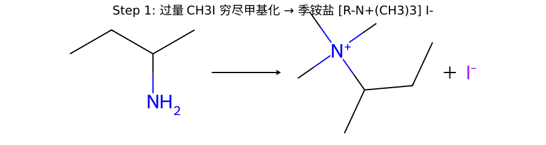
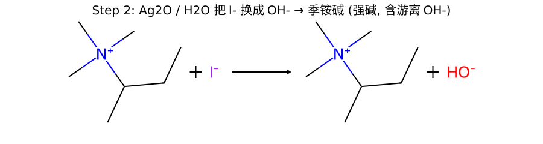
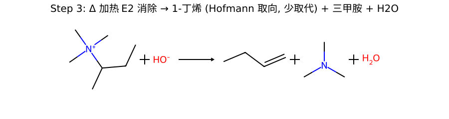
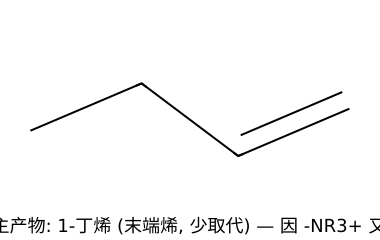
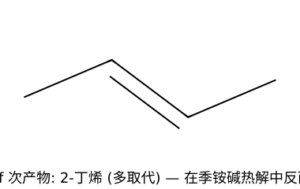
以 2-丁胺为例：穷尽甲基化 → 季铵碱 → Δ → 主要得 1-丁烯（Hofmann，少取代）而非 2-丁烯（Saytzeff，多取代）。
推电子 / 为什么：季铵碱里 –N⁺(CH₃)₃ 是个又大又带正电的离去基。E2 时大位阻迫使碱 OH⁻ 去拔位阻最小的端位 β-H（端甲基上的 H）；加上正电使端位 β-H 酸性差异，综合导致少取代烯为主（Hofmann 规则）。
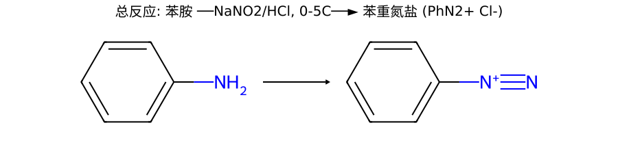
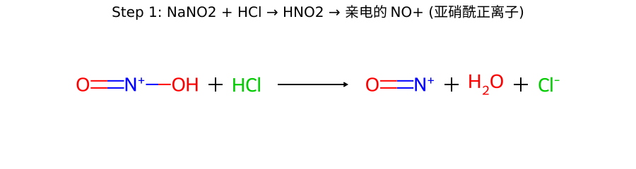
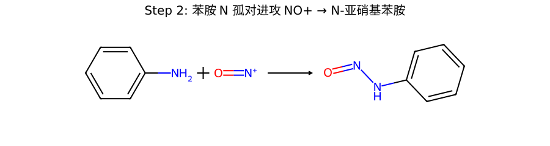
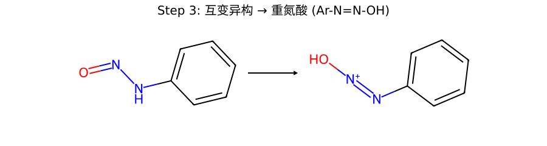
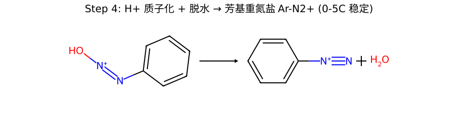
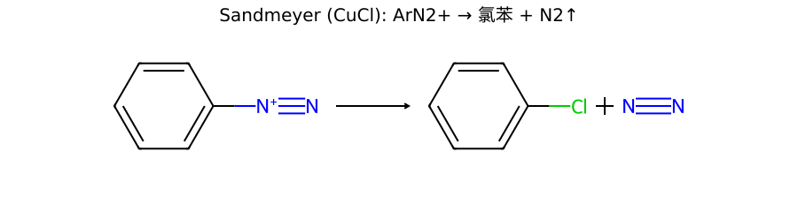
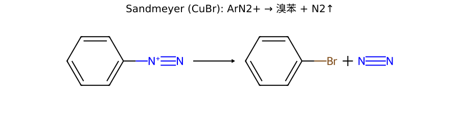
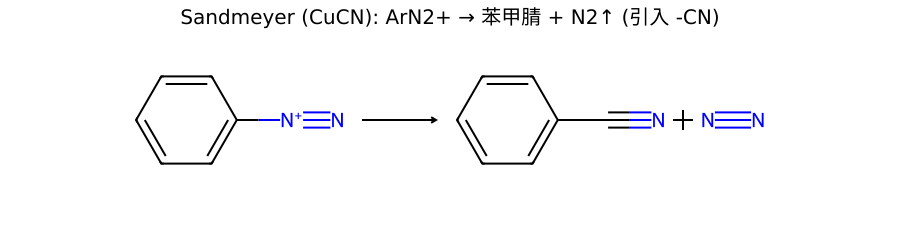
CuCl → 氯苯、CuBr → 溴苯、CuCN → 苯甲腈（引入 –CN，后续可水解成 –COOH 或还原成 –CH₂NH₂）。机理是 Cu(I) 催化的单电子/自由基过程。
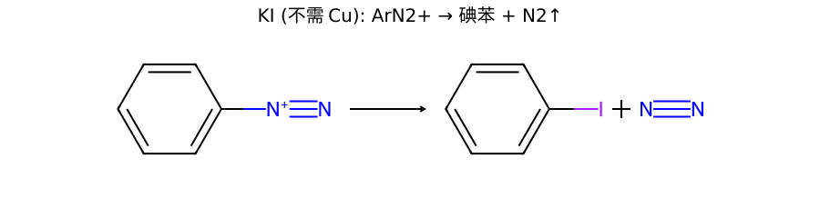
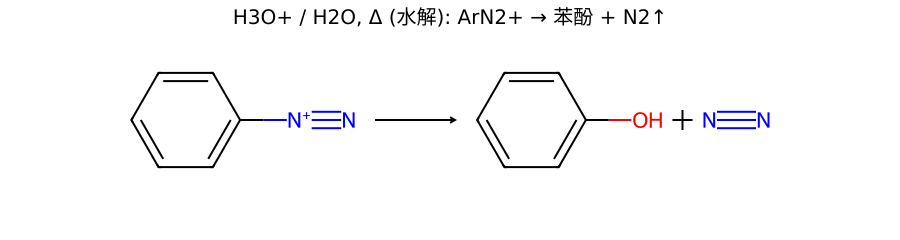
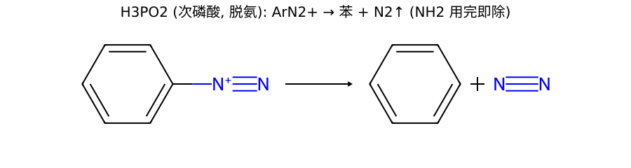
| 试剂 | 产物 | 用途 |
|---|---|---|
| KI（不需 Cu） | Ar–I 碘苯 | 引入碘（Ar–I 直接卤代很难） |
| HBF₄, Δ（Schiemann） | Ar–F 氟苯 | 引入氟（唯一可行路） |
| H₃O⁺ / H₂O, Δ（水解） | Ar–OH 苯酚 | 由苯胺造酚的经典路 |
| H₃PO₂（次磷酸，脱氨） | Ar–H 苯 | "先用 –NH₂ 定位、做完再去掉" |
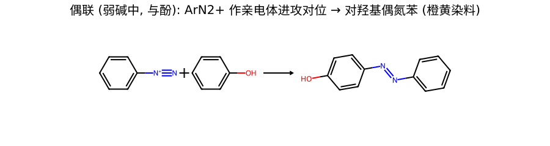
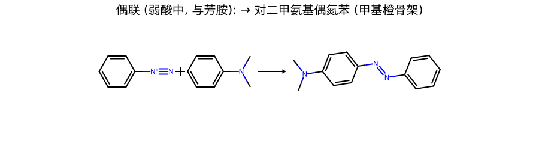
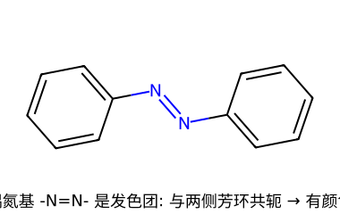
这是一次亲电芳香取代（EAS）：Ar–N₂⁺ 当亲电试剂，进攻富电子芳环的对位（对位被占则邻位）。不放 N₂，N 全保留在 –N=N– 偶氮基里。
偶氮基 –N=N– 与两侧芳环大共轭 → 是发色团，产物有鲜艳颜色，是偶氮染料 / 酸碱指示剂（如甲基橙、刚果红）的核心。
本章最常考的合成题，几乎都靠"苯胺 → 重氮盐 → 换成各种基团"这条中转链。苯环上很多基团（OH、F、I、CN）无法直接 EAS 引入，但都能通过重氮盐"换"上去。
苯 ──HNO₃/H₂SO₄──► 硝基苯 ──Fe/HCl──► 苯胺 ──NaNO₂/HCl,0–5℃──► 苯重氮盐 ──H₃O⁺,Δ──► 苯酚
苯胺 → 重氮盐，再分别用 CuBr→溴苯、HBF₄/Δ→氟苯、KI→碘苯、CuCN→苯甲腈。
直接溴代苯只能得到一溴/二溴（邻对位定位）。借助苯胺的强活化邻对位定位：
套路：氨基先把溴导到对称的 1,3,5 位置，用完再用重氮盐 + H₃PO₂ 去掉。
C₄H₉Br ──NaCN(SN2)──► C₄H₉CN（丁腈，增 1 碳）──LiAlH₄──► C₄H₉CH₂NH₂ 戊胺
对比：若要不增碳得伯胺，用 Gabriel（1-溴丁烷 → 正丁胺）。
| 方法 | 区分对象 | 现象 |
|---|---|---|
| Hinsberg（苯磺酰氯 + NaOH） | 1° / 2° / 3° 胺 | 1° 溶 NaOH；2° 不溶沉淀；3° 不反应 |
| HNO₂（NaNO₂/HCl, 0–5℃） | 脂/芳 × 1°/2°/3° | 脂 1° 放 N₂↑；芳 1° 成重氮盐；2° 黄色亚硝胺；芳 3° 对位绿 |
| 是否溶于稀盐酸 | 胺 vs 非碱性物 | 胺（碱）成盐溶于稀 HCl，再加碱又析出 |
| FeCl₃ / 溴水 | 区分胺与酚 | 酚显色/沉淀；苯胺也被溴水多溴（2,4,6-三溴苯胺白沉，需配合区分） |
各加 NaNO₂/HCl（冷，0–5℃）：
或用 Hinsberg 一步分级：正丁胺溶 NaOH、二乙胺不溶沉淀、三乙胺不反应。
加 NaNO₂/HCl（冷）：
| 反应 | 试剂 / 条件 | 产物 / 要点 |
|---|---|---|
| 成盐（碱性） | + HCl | 铵盐（脂肪胺>氨>芳胺） |
| 烷基化 | + RX | 升一级胺；过量 → 季铵盐（多烷基化） |
| 酰化 | + (RCO)₂O / RCOCl | 1°/2° → 酰胺；3° 不反应；苯胺保护用 |
| 磺酰化（Hinsberg） | + PhSO₂Cl / NaOH | 1° 溶 / 2° 沉 / 3° 不反应 |
| 与 HNO₂ | NaNO₂/HCl, 0–5℃ | 脂 1° 放 N₂；芳 1° 重氮盐；2° 亚硝胺；芳 3° 对位绿 |
| 穷尽甲基化 + 消除 | 过量 CH₃I → Ag₂O/H₂O → Δ | Hofmann 烯（少取代，反 Saytzeff）+ 三甲胺 |
| 重氮化 | ArNH₂ + NaNO₂/HCl, 0–5℃ | Ar–N₂⁺（万能中转站） |
| Sandmeyer | ArN₂⁺ + CuCl/CuBr/CuCN | Ar–Cl / Ar–Br / Ar–CN（放 N₂） |
| 重氮盐其它放氮 | KI / HBF₄Δ / H₂OΔ / H₃PO₂ | Ar–I / Ar–F / Ar–OH / Ar–H |
| 偶联 | ArN₂⁺ + 酚(弱碱)/芳胺(弱酸) | 偶氮染料 Ar–N=N–Ar′（留 N₂，进对位） |
| 制备：还原硝基 | Fe/HCl, Sn/HCl, H₂/Ni | Ar–NO₂ → Ar–NH₂（芳胺主路） |
| 制备：还原腈 | LiAlH₄ / H₂/Ni | R–CN → RCH₂NH₂（+1 碳） |
| 制备：还原胺化 | R₂C=O + 胺 → NaBH₃CN | 控级数得 1°/2°/3° 胺 |
| 制备：Gabriel | 酰亚胺K盐 + RX → 水解 | 纯 1° 胺 |
伯胺 (1°)！胺的级数看 N 上连几个烃基——这里 N 只连 1 个（叔丁基），所以是 1° 胺。别被"叔丁基"里的"叔"骗了（那说的是碳的级数）。
→ 详见 14.1
得 丁胺 CH₃CH₂CH₂CH₂NH₂，增 1 个碳（腈的 C 进了 –CH₂NH₂）。
对比：酰胺 RCONH₂ 还原成 RCH₂NH₂ 不增碳。这是"增不增碳"的经典考点。
→ 详见 14.3②
→ 详见 14.4②
⚠️ 脂肪 1° 胺放 N₂，但芳香 1° 胺不放（成稳定重氮盐）。
→ 详见 14.4③
主产物是 1-丁烯（Hofmann 取向，少取代），不是 2-丁烯（Saytzeff，多取代）。
原因：离去基 –N⁺(CH₃)₃ 又大又带正电，E2 时大位阻迫使碱去拔位阻最小的端位 β-H → 给少取代烯。这与普通卤代烃的 Zaitsev 相反。
⚠️ 必须先 Ag₂O/H₂O 把 I⁻ 换成 OH⁻ 才能消除。
→ 详见 14.5
必须 0–5℃（高于此芳基重氮盐分解，提前水解成酚）。
三大去向：
→ 详见 14.6
造苯酚：苯 →(硝化)→ 硝基苯 →(Fe/HCl)→ 苯胺 →(NaNO₂/HCl,0–5℃)→ 重氮盐 →(H₃O⁺,Δ 水解)→ 苯酚。
造 1,3,5-三溴苯：苯 → 苯胺 →(过量 Br₂/H₂O)→ 2,4,6-三溴苯胺 →(重氮化)→ →(H₃PO₂ 脱氨)→ 1,3,5-三溴苯。氨基当临时定位基，用完抹掉。
→ 详见 14.7
苯胺弱：N 孤对部分进入苯环大 π 共轭离域，"分给"了苯环 → 给质子能力大降（这是共振离域，不是诱导）。
酰胺几乎中性：N 孤对被相邻羰基拉去共轭（N–C=O ↔ N⁺=C–O⁻），N 上几乎没有可给质子的电子 → 别把酰胺当普通胺。
→ 详见 14.2